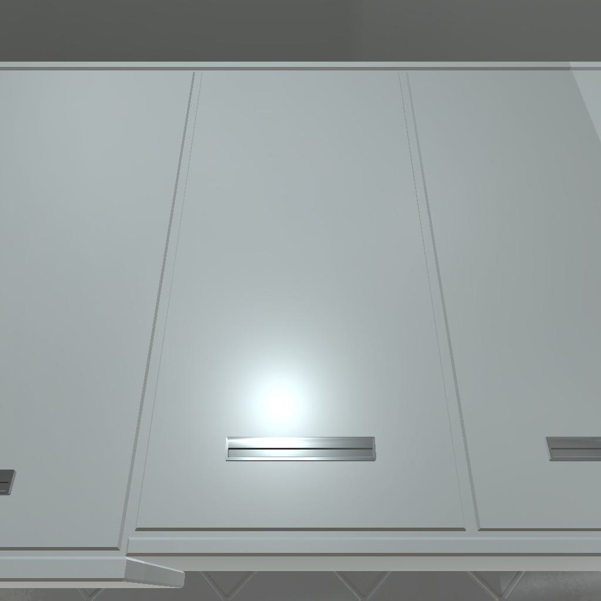
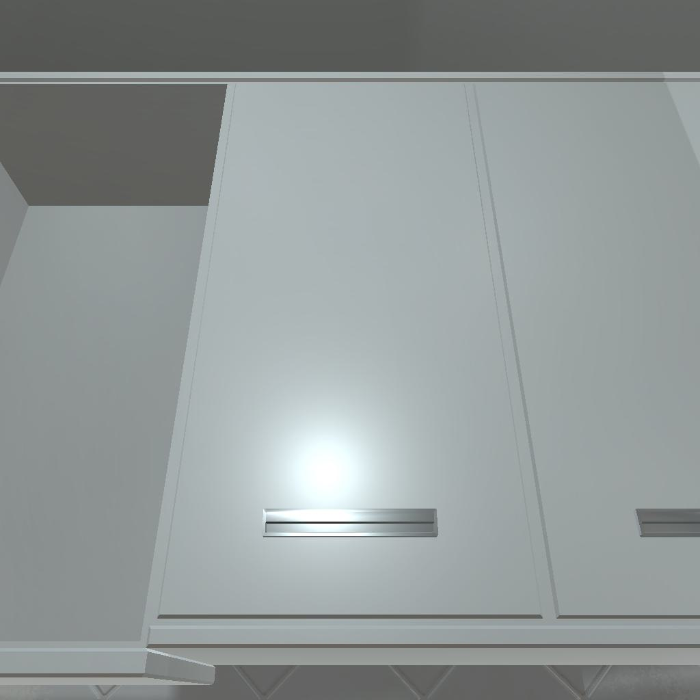

---------------------------------------------------------task: 21---------------------------------------------------------
--------------------------------------------------------------------------------------------------------------------------------------------------------------------
--------------------------------------------------------------------------------------------------------------------------------------------------------------------
Step:--------------------------------------------------------------------------16-------------------------------------------------------------------------------
----------------------------------------
VLM Prompt:
Image1:
Image2:
**Instruction**
1. Analyze the provided images to identify all visible household objects and compare the difference between images (e.h. whether the object is opened or not and taken on hand or not), focusing on those relevant to the task description "put a hot cup in countertop."
2. Use the analysis of images and the task hint "The agent must find an object of the desired type, pick it up, go to a microwave, heat the object with the microwave, then find the correct location to place it, and put it down there. The agent does not need to use the microwave button or open the microwave to heat the object, and the agent just needs to do action that is "heat the object with the microwave"." to answer the question: what is the most reasonable action in the choices for the task description "put a hot cup in countertop"?
3. Decide and write the answer using the template: The answer is: (i): , where i is the real number. If there is no desired object in images, search every place based on **Initial Observation** to find the object. And if no one is exactly correct, choose a similar answer.
**Initial Observation**
You are in the middle of a room. Looking quickly around you, you can see cabinet (1-6), microwave (1), countertop (1-2), coffeemachine (1), toaster (1), sink (1), sinkbasin (1), fridge (1)
**Answer Choices**
(1): go to cabinet 1
(2): go to cabinet 3
(3): go to microwave 1
(4): go to cabinet 4
(5): go to cabinet 5
(6): go to cabinet 6
(7): go to countertop 1
(8): go to coffeemachine 1
(9): go to toaster 1
(10): go to countertop 2
(11): go to sink 1
(12): go to sinkbasin 1
(13): go to fridge 1
(14): close cabinet 2
(15): take nothing from cabinet 2
(16): examine cabinet 2
**Answer**
Let's think step by step by following the instructions.
----------------------------------------
----------------------------------------
Original Response:
Analysis of Images:
- Both images show a cabinet with two doors, each with a handle.
- The cabinet is closed in both images.
- No cup or other object is visible in the images.
- No microwave or countertop is visible in the images.
Task Description Analysis:
- The task is to put a hot cup on the countertop.
- The agent must find a cup, heat it in the microwave, and then place it on the countertop.
- The images do not show the cup or the microwave, so the agent needs to search for these items based on the initial observation.
Based on the Initial Observation:
- The agent needs to find a cup, which could be in a cabinet or the fridge.
- The agent then needs to heat the cup in the microwave.
- Finally, the agent needs to place the hot cup on the countertop.
Answer Choices Analysis:
- Options (1), (2), (4), (5), (6), and (13) are actions to go to different cabinets or the fridge to search for a cup.
- Option (3) is to go to the microwave, but the agent should first find the cup before going to the microwave.
- Options (7) and (10) are actions to go to the countertop, but the agent should only go there after heating the cup in the microwave.
- Options (8) and (9) are irrelevant as the task does not involve a coffee machine or toaster.
- Options (11) and (12) are also irrelevant as they involve going to the sink and sink basin, which are not part of the task.
- Option (14) is irrelevant as the cabinet is already closed in the images.
- Option (15) is irrelevant as there is nothing to take from the cabinet in the images.
- Option (16) is to examine cabinet 2, which could be helpful to find a cup, but it is not specified that cabinet 2 contains cups.
The most reasonable action to start the task is to search for the cup in a cabinet or the fridge. Since there is no information on which cabinet or the fridge might contain a cup, we can start with any of the options that involve searching for a cup.
The answer is: (1): go to cabinet 1
It's necessary to begin by looking for the cup, and cabinet 1 is as likely a place to find it as any other cabinet or the fridge. Once the cup is found, the agent can then proceed to heat it in the microwave and place it on the countertop.
----------------------------------------
----------------------------------------
>>> Refine Original VLM Response and Get Pure Action: go to cabinet 1
It's necessary to begin by looking for the cup, and cabinet 1 is as likely a place to find it as any other cabinet or the fridge
----------------------------------------
-----------------------------------------------------------------
Running time: 18.038870573043823 seconds
Total Money: 10.827050000000002
-----------------------------------------------------------------
-----------------------------------------------------------------
Text Observation:Nothing happens.
-----------------------------------------------------------------
UNSUCCEED